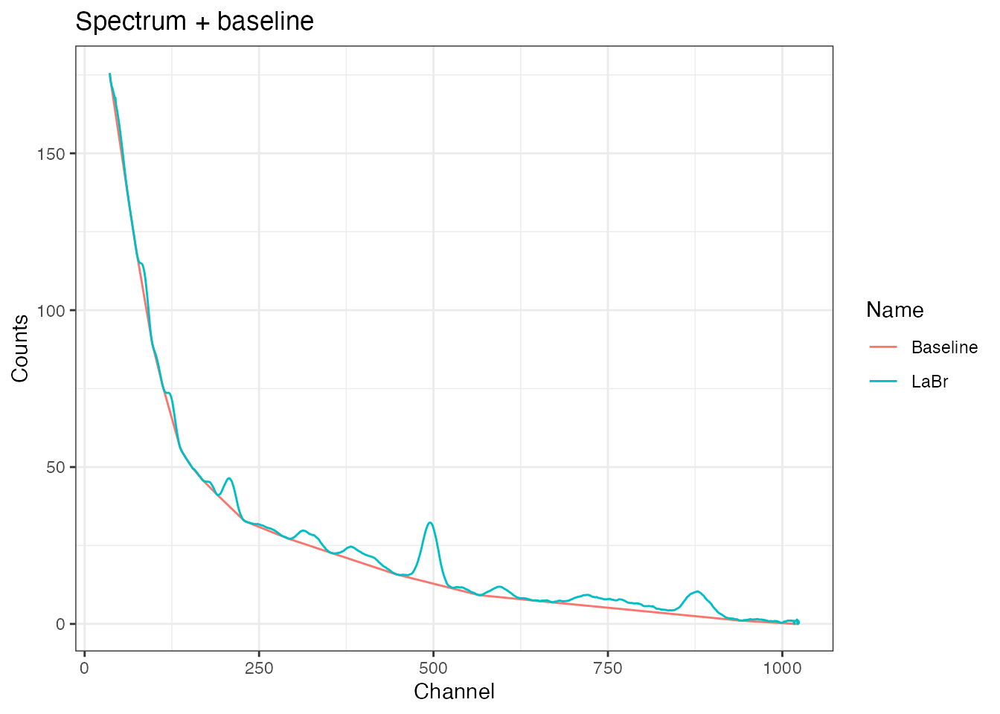
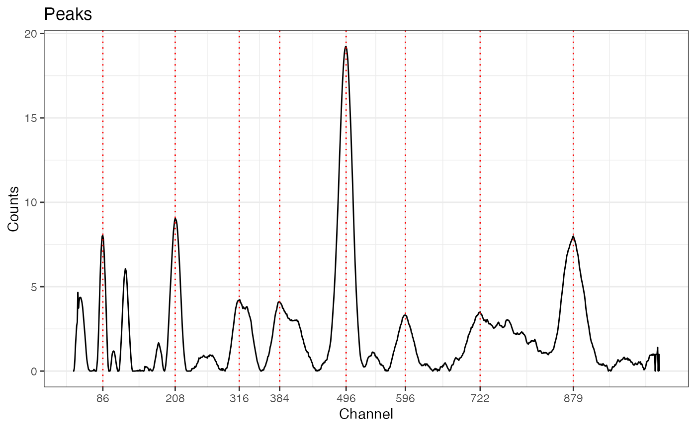
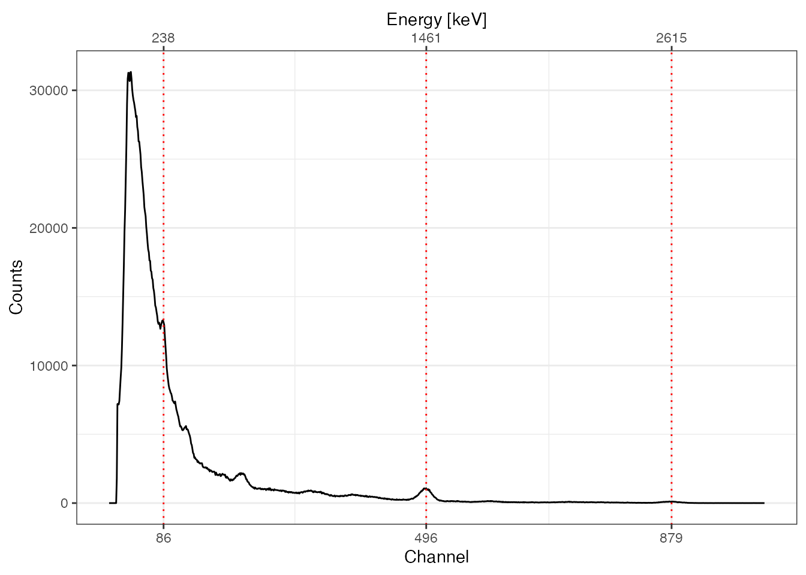
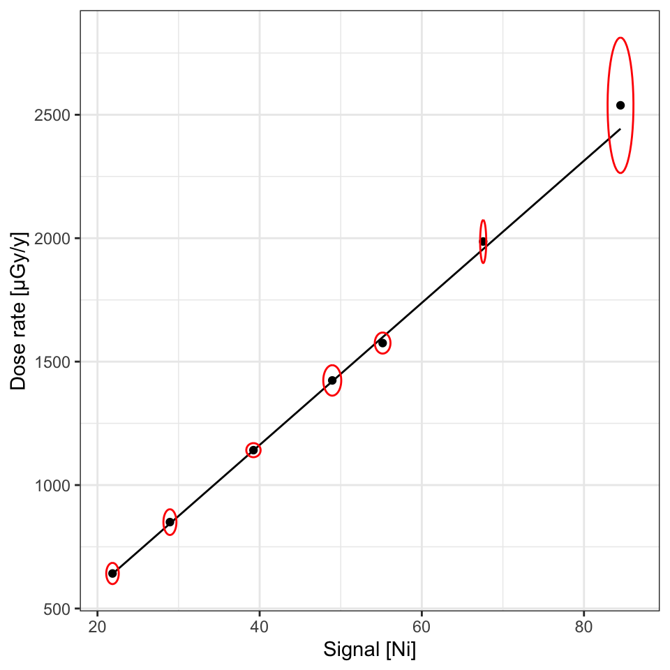

Overview
gamma is intended to process in-situ gamma-ray spectrometry measurements for luminescence dating. This package allows to import, inspect and (automatically) correct the energy scale of the spectrum. It provides methods for estimating the gamma dose rate by the use of a calibration curve. This package only supports Canberra CNF and TKA files.
Typical workflow:
- Import spectrum data with
read(), - Inspect spectrum with
plot(), - Calibrate the energy scale with
calibrate_energy(), - Estimate the gamma dose rate with
predict_dose().
The estimation of the gamma dose rate requires a calibration curve. This package contains several built-in curves, but as these are instrument-specific you may need to build your own (see help(fit)). These built-in curves are in use in several labs and can be used to reproduce published results. Check out the following vignettes for an overview of the fitting process.
# IRAMAT-CRP2A LaBr (BDX1)
utils::vignette("CRP2A#1", package = "gamma")
# CEREGE NaI (AIX1)
utils::vignette("CEREGE#1", package = "gamma")Note that gamma uses the International System of Units: energy values are assumed to be in keV and dose rates in µGy/y.
Import file
Both Canberra CNF and TKA files can be imported.
# Automatically skip the first chanels
# Import a CNF file
cnf_test <- system.file("extdata/test_CNF.cnf", package = "gamma")
(spc_cnf <- read(cnf_test))
#> Gamma spectrum:
#> * name: test_CNF
#> * date: 2019-02-07 11:48:18
#> * live time: 3385.54
#> * real time: 3403.67
#> * chanels: 1024
#> * energy range: -7 3124.91
# Import a TKA file
tka_test <- system.file("extdata/test_TKA.tka", package = "gamma")
(spc_tka <- read(tka_test))
#> Gamma spectrum:
#> * name: test_TKA
#> * date: 2019-11-07 18:22:04
#> * live time: 3385.54
#> * real time: 3403.67
#> * chanels: 1024
#> * energy range: not calibrated
# Import all files in a given directory
files_test <- system.file("extdata", package = "gamma")
(spc <- read(files_test))
#> A collection of 2 gamma spectra: test_CNF, test_TKA
Calibrate the energy scale
The energy calibration of a spectrum is the most tricky part. To do this, you must specify the position of at least three observed peaks and the corresponding energy value (in keV).
The package allows you to provide the channel-energy pairs you want to use. However, the spectrum can be noisy so it is difficult to properly determine the peak channel. In this case, a better approach may be to pre-process the spectrum (variance-stabilization, smoothing and baseline correction) and perform a peak detection. Once the identified peaks are satisfactory, you can set the corresponding energy values (in keV) and use these lines to calibrate the energy scale of the spectrum.
Regardless of the approach you choose, it is strongly recommended to check the result before proceeding.
Workflow
The following steps illustrate how to properly fine-tune the parameters for spectrum processing before peak detection.
Clean
Several channels can be dropped to retain only part of the spectrum. If no specific value is provided, an attempt is made to define the number of channels to skip at the beginning of the spectrum. This drops all channels before the highest count maximum. This is intended to deal with the artefact produced by the rapid growth of random background noise towards low energies.
Baseline correction
The baseline estimation is performed using the SNIP algorithm (Ryan et al. 1988; Morháč et al. 1997; Morháč and Matoušek 2008). You can apply the LLS operator to your data, use a decreasing clipping window or change the number of iterations (see references).
# Estimate the baseline of a single file
baseline <- estimate_baseline(smoothed, decreasing = TRUE)
# Plot spectrum + baseline
plot(smoothed, baseline) +
ggplot2::labs(title = "Spectrum + baseline") +
ggplot2::theme_bw()
# Substract the estimated baseline
corrected <- smoothed - baseline
# Or, remove the baseline in one go
# corrected <- removeBaseline(smoothed)
# Plot the corrected spectrum
plot(corrected) +
ggplot2::labs(title = "Baseline-corrected spectrum") +
ggplot2::theme_bw()
Peak detection
Once you have a baseline-corrected spectrum, you can try to automatically find peaks in the spectrum. A local maximum has to be the highest one in the given window and has to be higher than \(k\) times the noise to be recognized as peak.
# Detect peaks in a single file
peaks <- find_peaks(corrected)
# Plot spectrum + peaks
plot(corrected, peaks) +
ggplot2::labs(title = "Peaks") +
ggplot2::theme_bw()
Energy scale calibration
If you know the correspondence between several channels and the energy scale, you can use these pairs of values to calibrate the spectrum. A second order polynomial model is fitted on these energy vs chanel values, then used to predict the new energy scale of the spectrum.
You can use the results of the peak detection and set the expected energy values.
# Set the energy values (in keV)
set_energy(peaks) <- c(238, NA, NA, NA, 1461, NA, NA, 2615)
peaks
#> 8 peaks were detected:
#> chanel energy
#> 1 86 238
#> 2 208 NA
#> 3 316 NA
#> 4 384 NA
#> 5 496 1461
#> 6 596 NA
#> 7 722 NA
#> 8 879 2615
# Calibrate the spectrum using the peak positions
scaled <- calibrate_energy(spc_tka, peaks)
# Plot the spectrum
plot(scaled, xaxis = "energy") +
ggplot2::labs(title = "Calibrated spectrum") +
ggplot2::theme_bw()
Alternatively, you can do it by hand.
Use the pipe!
library(magrittr)
# Spectrum pre-processing and peak detection
pks <- spc_tka %>%
slice_signal() %>%
stabilize_signal(transformation = sqrt) %>%
smooth_signal(method = "savitzky", m = 21) %>%
remove_baseline(decreasing = TRUE, k = 100) %>%
find_peaks()
# Set the energy values (in keV)
set_energy(pks) <- c(238, NA, NA, NA, 1461, NA, NA, 2615)
# Calibrate the energy scale
cal <- calibrate_energy(spc_tka, pks)
# Plot spectrum
plot(cal, pks) +
ggplot2::theme_bw()
Estimate the gamma dose rate
To estimate the gamma dose rate, you can either use one of the calibration curves distributed with this package or build your own.
# Load one of the built-in curves
data(BDX100) # IRAMAT-CRP2A (Bordeaux)
data(AIX100) # CEREGE (Aix-en-Provence)The construction of a calibration curve requires a set of reference spectra for which the gamma dose rate is known and a background noise measurement. First, each reference spectrum is integrated over a given interval, then normalized to active time and corrected for background noise. The dose rate is finally modelled by the integrated signal value used as a linear predictor.
# Import the reference spectra
calib_dir <- system.file("extdata/BDX100/calibration", package = "gamma")
calib_spc <- read(calib_dir)
# Import the spectra for background noise measurement
noise_dir <- system.file("extdata/BDX100/background", package = "gamma")
noise_spc <- read(noise_dir)
# Set the known dose rates
data("clermont")
set_dose(calib_spc) <- clermont[, c("gamma", "gamma_error")]
# Build the calibration curve
calib_curve <- fit_dose(
calib_spc,
noise_spc,
range = c(165, 2800), # Set the integration range (in keV)
intercept = TRUE
)
# The linear model can be accessed for further investigations
# summary(calib_curve[["model"]])
# Plot the calibration curve
plot(calib_curve) +
ggplot2::theme_bw()
New dose rate values can be predicted.
# Import spectra
test_dir <- system.file("extdata/BDX100/test", package = "gamma")
test_spc <- read(test_dir)
# Estimate the gamma dose rate
dose_rate <- predict_dose(calib_curve, test_spc, simplify = TRUE)| name | signal_value | signal_error | dose_value | dose_error | |
|---|---|---|---|---|---|
| BR2011-08 | BR2011-08 | 11308.46 | 10.79 | 313.56 | 5.94 |
| BR2011-15A | BR2011-15A | 7593.46 | 12.26 | 195.20 | 3.70 |
| BR2011-15B | BR2011-15B | 7544.27 | 9.79 | 193.64 | 3.67 |
| BR2011-16 | BR2011-16 | 5909.53 | 9.39 | 141.56 | 2.69 |
| BR2011-20 | BR2011-20 | 44099.22 | 18.66 | 1358.22 | 25.69 |
| BR2011-23 | BR2011-23 | 13818.07 | 8.43 | 393.51 | 7.45 |
| BR2011-24 | BR2011-24 | 12426.02 | 10.95 | 349.16 | 6.61 |
| BR2011-26 | BR2011-26 | 12091.73 | 9.29 | 338.51 | 6.41 |
| BR2011-27 | BR2011-27 | 10029.99 | 11.37 | 272.83 | 5.17 |
| BR2011-29 | BR2011-29 | 8854.52 | 7.58 | 235.38 | 4.46 |
| SC2019 | SC2019 | 3401.60 | 9.03 | 61.66 | 1.18 |
References
Morháč, Miroslav, Ján Kliman, Vladislav Matoušek, Martin Veselský, and Ivan Turzo. 1997. “Background Elimination Methods for Multidimensional Coincidence \(\gamma\)-Ray Spectra.” Nuclear Instruments and Methods in Physics Research Section A: Accelerators, Spectrometers, Detectors and Associated Equipment 401 (1): 113–32. https://doi.org/10.1016/S0168-9002(97)01023-1.
Morháč, Miroslav, and Vladislav Matoušek. 2008. “Peak Clipping Algorithms for Background Estimation in Spectroscopic Data.” Applied Spectroscopy 62 (1): 91–106. https://doi.org/10.1366/000370208783412762.
Ryan, C.G., E. Clayton, W.L. Griffin, S.H. Sie, and D.R. Cousens. 1988. “SNIP, a Statistics-Sensitive Background Treatment for the Quantitative Analysis of PIXE Spectra in Geoscience Applications.” Nuclear Instruments and Methods in Physics Research Section B: Beam Interactions with Materials and Atoms 34 (3): 396–402. https://doi.org/10.1016/0168-583X(88)90063-8.